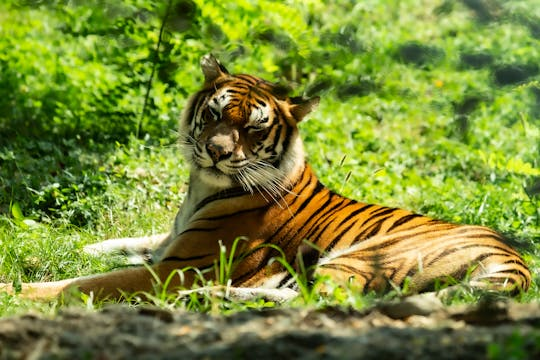

El tigre bengala es la subespecie de tigre más numerosa y conocida. Es un majestuoso felino que habita en las praderas, bosques tropicales y subtropicales de Bangladesh, Bután, India y Nepal.
Son solitarios y territoriales
Son carnivoros
Es el segundo felino más grande

CARACTERISTICAS
Son cazadores nocturnos y su dieta consiste principalmente en grandes ungulados como ciervos, búfalos y jabalíes.
El tigre de Bengala se encuentra en peligro de extinción debido a la pérdida de hábitat, la caza furtiva y el conflicto con humanos.